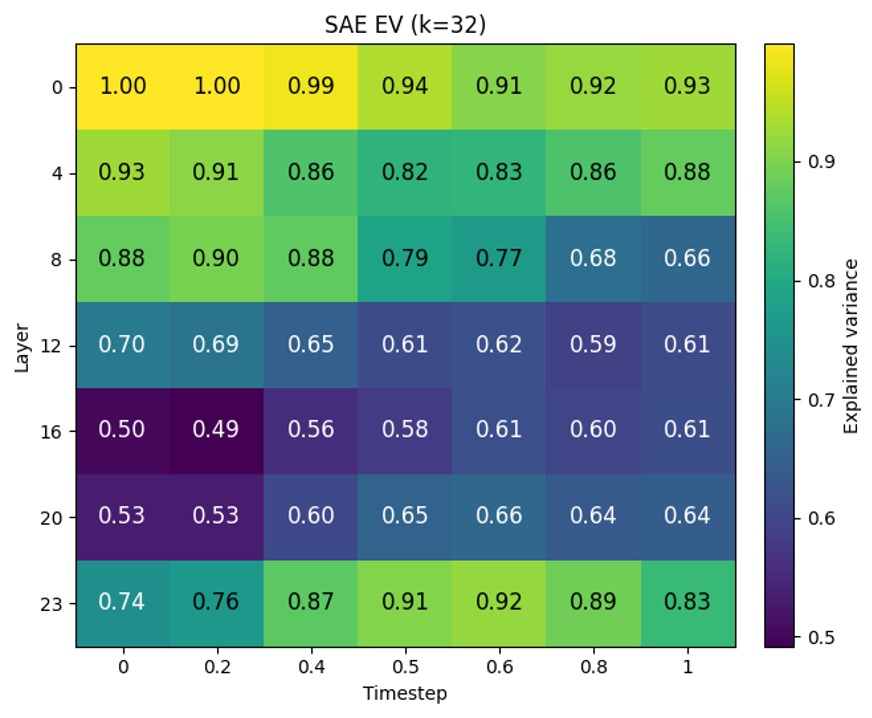
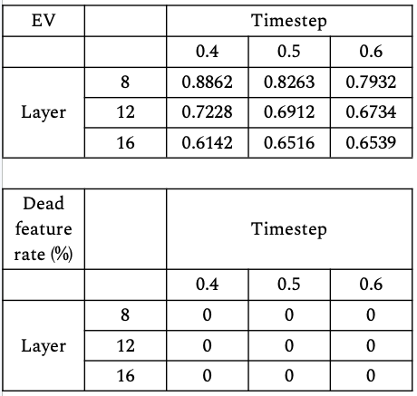
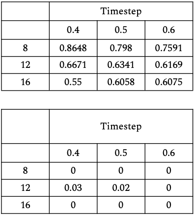

SAE explained-variance heatmap
Validation explained variance (EV) of the TopK SAEs across the layer × timestep grid. Higher is better; mid-network cells reflect the high intrinsic dimensionality of the residual stream.

TopK sparsity ablation (k = 32 vs k = 64), mid-network layers
Effect of the TopK sparsity level on SAE quality metrics for the mid-network layers. Left: k = 32. Right: k = 64. Doubling K (expansion factor) gives only marginal gains over EV(<=0.02 at layer 8 and <=0.06 at layer 12 and 16), with dead feature rate near zero. Since SAE EV at a fixed K also depends on the variance and dimensionality of our chosen input, i.e., block delta activations from the residual stream of the diffusion model, in order to maintain sufficient sparsity and monosemanticity, we fix k=32 for our main analysis.

